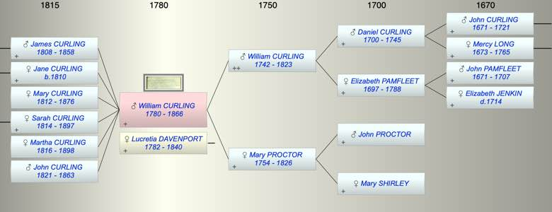
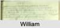

| [Index] |
| William CURLING (1780 - 1866) |
|  |
|  |
| b. 01 Oct 1780 at City of London |
| +. Lucretia DAVENPORT (1782 - 1840) |
| d. 1866 at London aged 86 |
| Parents: |
| William CURLING (1742 - 1823) |
| Mary PROCTOR (1754 - 1826) |
| Children (6): |
| James CURLING (1808 - 1858) |
| Jane CURLING (1810 - ) |
| Mary CURLING (1812 - 1876) |
| Sarah CURLING (1814 - 1897) |
| Martha CURLING (1816 - 1898) |
| John CURLING (1821 - 1863) |
| Events in William CURLING (1780 - 1866)'s life | |||||
| Date | Age | Event | Place | Notes | Src |
| 01 Oct 1780 | William CURLING was born | City of London | Note 1 | ||
| 26 May 1808 | 27 | Birth of son James CURLING | City of London | Note 2 | |
| 03 Dec 1810 | 30 | Birth of daughter Jane CURLING | City of London | Note 3 | |
| 06 Jul 1812 | 31 | Birth of daughter Mary CURLING | City of London | Note 4 | |
| 11 May 1814 | 33 | Birth of daughter Sarah CURLING | City of London | ex Non Conformist register FMP | |
| 01 Dec 1816 | 36 | Birth of daughter Martha CURLING | City of London | Note 5 | |
| 28 Apr 1821 | 40 | Birth of son John CURLING | City of London | Note 6 | |
| 1823 | 43 | Death of father William CURLING (aged 81) | |||
| 1826 | 46 | Death of mother Mary PROCTOR (aged 72) | Note 7 | ||
| 1840 | 60 | Death of wife Lucretia DAVENPORT (aged 58) | Denmark Hill, Lambeth | Note 8 | |
| 18 Mar 1858 | 77 | Death of son James CURLING (aged 49) | Ipswich | Note 9 | |
| 1863 | 83 | Death of son John CURLING (aged 42) | Denmark Hill, London | Note 10 | |
| 1866 | 86 | William CURLING died | London | Note 11 | |
| Personal Notes: |
|
1851 census living Lambeth 70 retired merchant with daughters Mary 38, and Martha 33 both single and son John 29 all born St Botoloph.
1861 census living Denmark Hill, retired fish merchant with Mary 48, Martha 44 both single daughters and son John 39, fish merchant |
| Created on a Mac™ using iFamily for Mac™ on 8 Oct 2023 |